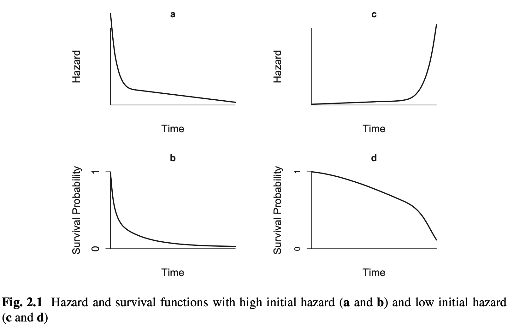
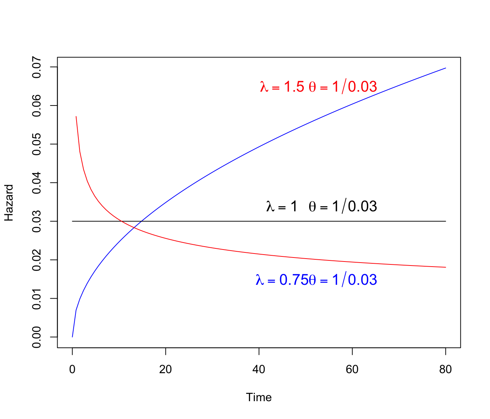
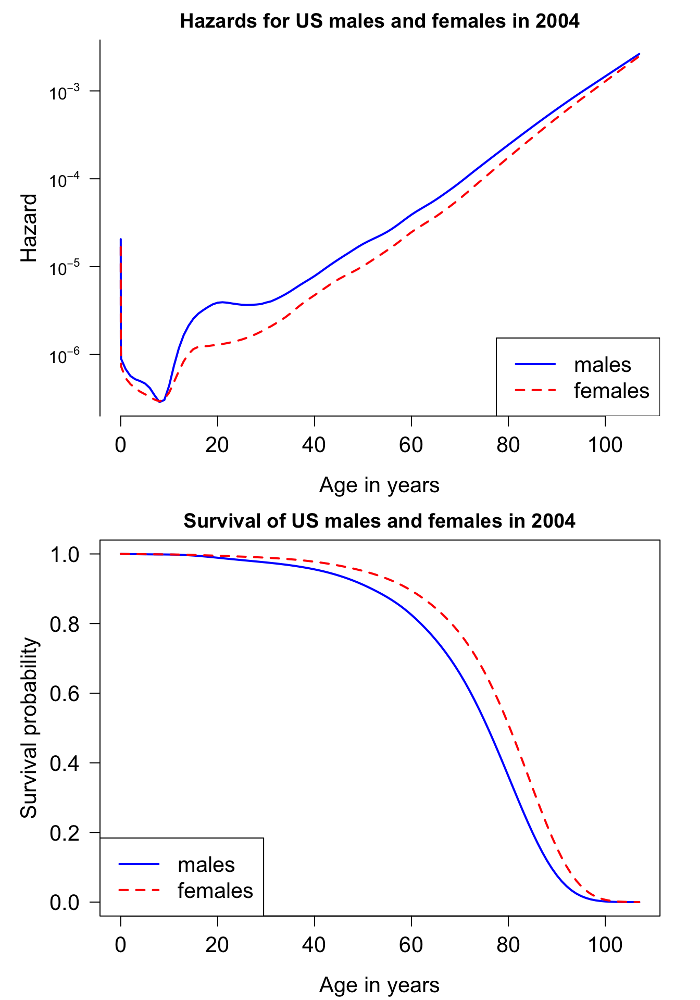

library(tidyverse)
library(kableExtra)
library(ggplot2)
library(here)
library(survival)9 생존함수와 위험함수
9.1 필요한 패키지
9.2 생존분석 소개
생존분석(Survival Analysis)은 특정 사건(event)이 발생하기까지의 시간 을 분석하는 통계적 방법이다. 여기서 생존이란 단어는 좁은 의미에서 생존 시간을 의미하지만, 실제로는 질병 발생, 제품 고장, 사건 재발 등 다양한 사건에 적용될 수 있다.
9.2.1 생존 시간의 정의
생존 시간(Survival Time)은 관심 사건(event)이 일어날 때까지의 시간 간격(time interval)을 말한다. 생존 시간이 발생하는 중요한 분야와 예는 다음과 같다.
- 의학 및 생명 과학 분야
- 암 환자의 생존 시간 : 암 치료 후 환자가 재발이나 사망할 때까지의 시간. 생존 시간은 종종 치료 효과나 병의 진행 상태를 평가하는 데 중요한 지표로 사용된다.
- 수술 후 회복 기간 : 수술 후 환자가 회복되어 퇴원할 때까지 걸리는 시간. 이는 회복에 영향을 미치는 요인(예: 연령, 수술 종류 등)을 평가할 때 유용하다.
- 감염 질환의 치료 시간 : 환자가 감염 질환을 치료받고 증상이 완화되기까지의 시간. 특정 치료법의 효과를 비교하는 데 사용된다.
- 공학 및 제조 분야
- 기계 부품의 고장 시간 : 기계나 전자 장비의 부품이 처음 사용된 후 고장 나기까지 걸리는 시간. 이는 제품의 내구성 및 품질 관리에 필수적인 데이터로 사용된다.
- 선박 엔진 수명: 엔진이 처음 가동되어 고장 나거나 수리/교체가 필요할 때까지의 시간. 각 제조사나 모델에 따라 엔진의 수명이 달라지므로, 이를 비교해 품질과 성능을 평가할 수 있다.
- 가전제품의 고장 시간: TV, 냉장고, 핸드폰 등의 가전제품이 처음 설치된 후 고장 나기까지 걸리는 시간. 이 정보는 고객 보증 기간 설정과 결함 분석에 중요한 역할을 한다.
- 사회 및 경제학 분야
- 고용 지속 기간 : 신규 채용된 직원이 특정 회사에서 근무를 지속하는 기간. 이는 이직률, 근무 환경의 질, 직무 만족도 등을 분석하는 데 활용된다.
- 구독 서비스 유지 시간 : 고객이 스트리밍 서비스, 구독 서비스 등 서비스에 가입하여 중단하기까지 걸리는 시간. 이를 통해 구독 모델의 효율성과 마케팅 전략을 평가할 수 있다.
- 대출 상환 기간 : 고객이 금융 대출을 받고 완전히 상환하기까지의 기간. 이는 채무 불이행 가능성을 예측하고 대출 조건을 설정하는 데 중요하다.
위의 예제에서 알 수 있듯이 생존분석은 시간에 따라서 특정사건이 발생할 가능성이 어떻게 변하는지에 대한 방법을 연구하는 분야이다.
9.2.2 생존 시간의 특징
생존 시간은 다음과 같은 특별한 성질을 가진다.
생존시간은 0을 포함하는 양수이다. 즉, 생존시간은 음수로 나타날 수 없으며 생존시간에 대한 분포를 고려하는 경우 0보다 큰 값ㅁ만 가질 수 있는 분포를 고려해야 한다. 예를 들어 정규분포는 생존시간의 분포로 사용하기 적합하지 않다.
많은 연구에서 생존 시간을 관측하려면 일정한 기간을 정하고 시간이 흐르면서 관측값을 얻는 경우가 많다. 만약 생존시간이 연구기간보다 길면 생존시간을 정확하게 관측할 수 있다. 이러한 현상을 중도절단(censoring)이라 하며, 생존분석에서먼 나타나는 매우 중요한 개념이다.
예를 들어 임상실험은 일반적으로 실험에 참가할 환자를 모집하고(accrural) 일정 기간의 치료기간(treatment) 또는 관찰기간(follow-up)을 정하여 실시한다. 만약 관찰하려는 특정사건(event)가 실험의 종료 이후에 발생하면(censoring) 생존시간에 대한 중도절단자료(censored data)가 발생한다.
환자가 치료 실험에 참여하고 있는데, 치료 효과를 보지 못하거나 다른 이유로 실험에서 중도에 이탈할 수 있어. 이 경우, 연구자들은 환자가 실험을 중단한 시점까지만 관찰할 수 있게 되므로, 정확한 사건 발생 시간을 알 수 없게 된다.
또는 실험에 참가한 환자의 특정 시간 발생이 실험의 종료 후에 발생하면 이 환자의 생존시간은 정확하게 알수 없다. 다만 종료된 시점 이후에 특정사건이 일어난다는 사실은 명확하므로 중도절단 자료는 불완전한 정보(incomplete infomation)를 알려준다.
아래 그림은 임상실험에서 중도절단 자료가 발생하는 상황을 단순하게 나타낸 그림이다. 3명의 환자(patient 1,3,4)의 사건이 임상실험 종료후 발생하면 이 환자들의 생존시간은 정확하게 알수 없다.

9.3 생존함수와 위험함수
확률변수 \(T>0\)를 생존시간이라고 하고 \(f(t)\)를 확률밀도함수라고 하자. \(T\)의 누적분포함수(cumulative distribution function; CDF)는 다음과 같이 정의된다.
\[ F(t) = P(T \le t) = \int_0^t f(t) dt \tag{9.1}\]
또한 생존함수(Survival function)은 다음과 같이 정의된다.
\[ S(t) = P (T > t) = 1-F(t) \tag{9.2}\]
위험함수(hazrd function)의 정의는 다음과 같으며 만약 생존시간이 \(t\) 보다 클때 바로 사망할 확률을 의미하며 순간위험률(instantaneous failure rate)이다.
\[ \begin{aligned} h(t) & = \lim_{dt \rightarrow 0} \frac{ P(t < T \le t+ dt | T > t) }{dt} \\ \notag & = \lim_{dt \rightarrow 0} \frac{1}{dt} \frac{P(P(t < T \le t+ dt )}{P(T >t)} \\ \notag & = \frac{f(t)}{S(t)} \end{aligned} \tag{9.3}\]
위험함수의 의미를 좀더 자세히 알아보자.
위험함수 9.3 는 아주 짧은 시간에 일어날 사건의 확률로서 순간적인(instantaneous)인 의미를 가진다. 정의에서 보듯이 아주 짧은 시간에 일어나는 극한(\(lim_{dt \rightarrow 0}\))의 의미이다.
위험함수는 확률로서 정의되지만 사건 발생률(rate)로 이해할 수 있다. 위험함수의 정의에서 분모는 확률이고 분자는 시간으로 표시되기 때문에 마치 단위 시간당 일어나는 발생률로 이해할 수 있다. 또한 위험함수의 값은 [0,1] 사이에 있는 것이 아니기 때문에 단위 시간당 발생률로 이해하는 것이 편리하다 (\(h(t) \ge 0\)).
사건 발생률은 분야에 따라서 사망률, 실패율, 위험률 등으로 불린다.
위험함수는 조건부 확률로 정의되어 있다. 즉, 모든 개체에 대한 사건이 아니라 시간 \(t\)까지 살아있는 개체들에 대한 위험률이다.
생존분석에서는 생존함수보다 위험함수가 더 큰 의미를 가진다. 위험함수가 시간에 따라서 변하는 추세는 시간에 따른 위험의 변화를 나타내기 때문에 생존함수보다 위험의 변화에 대한 정보를 잘 파악할 수 있다.

생존함수와 위험함수는 다음과 같은 관계를 가지고 있다.
\[ \begin{aligned} h(t) & = \frac{f(t)}{S(t)} \\ & = \frac{f(t)}{1-F(t)} \\ & = - \frac {\partial}{\partial t} \log [1-F(t)] \\ & = - \frac {\partial}{\partial t} \log S(t) \end{aligned} \]
따라서 다음의 관계가 성립힌다.
\[ S(t) = \exp[-H(t)] \]
여기서
\[ H(t) = \int_0^t h(t) dt \tag{9.4}\]
이며 \(H(t)\)를 누적 위험함수(cumulative hazard function)라고 한다.
위의 식에서 볼 수 있듯이 위험함수를 알면 생존함수를 쉽게 구할 수 있고 또한 반대로 생존함수를 알면 위험함수를 자동적으로 알게된다.
9.4 위험함수의 형태
앞에서 언급했듯이 위험함수는 시간에 따른 위험의 변화를 말해준다. 생존분석에서 중요한 분포들과 예제를 가지고 다양한 위험함수의 형태를 알아보자.
보기 9.1 (지수분포) 만약 생존시간 \(T\)가 지수분포(Exponential distribution)을 따른다고 하자.
\[ f(t; \lambda) = \lambda e^{-\lambda t} \]
위에서 \(\lambda\) 는 흔히 단위시간 당 사망률, 실패율(failure rate)라고 부르며 \(E(T) = 1/\lambda\)이다.
생존함수(survaival function)와 위험함수(hazard function)은 다음과 같이 주어진다.
\[ \begin{aligned} S(t) & = P(T>t) = 1 - P(T \le t) \\ & = 1 - \int_0^t \lambda e^{-\lambda t} \\ & = 1 - (1-e^{-\lambda t} ) \\ & = e^{-\lambda t} \\ h(t) & = \frac{f(t)}{S(t)} \\ & = \lambda e^{-\lambda t} / e^{-\lambda t} \\ & = \lambda \end{aligned} \]
누적위험함수는 아래와 같다. \[ H(t) = \int_0^t h(t) dt = \lambda t \]
생존시간이 지수분포를 따른다면 위험함수는 시간에 관계없이 상수 \(\lambda\)이다. 이렇게 시간에 따라서 위험함수가 상수인 경우는 현실에서는 거의 나타나지 않는다. 위험함수가 상수라는 것은 시간이 지나도 (1) 제품이 고정날 또는 (2) 사람이 사망할 위험성이 변허지 않는다는 의미이다.
지수분포는 생존분석에서 중요한 의미를 가진다. 즉, 생존시간이 지수분포를 따르면 개체는 얼마나 시간이 경과했는지 정보가 없다는 것이며 주어진 시각에 사건이 일어나지 않았다면 바로 다음 시간에 사건이 일어날 확률은 언제나 동일하다. \(\blacksquare\)
보기 9.2 (와이블분포) 만약 생존시간이 와이블 분포(Weibull distribution)를 따른다면 확률밀도함수는 다음과 같다.
\[ f(t) = \frac{\lambda t^{\lambda-1}}{\theta^\lambda} \exp \left[ - \left(\frac{t}{\theta} \right)^\lambda \right], \quad \theta,\lambda>0, t \geq 0. \]
평균은 \(E(T)=\theta \Gamma(1+1/\lambda)\) 이다. 여기서 \(\lambda=1\)이면 지수분포가 된다.
이때 생존 함수는 다음과 같다.
\[ \begin{aligned} S(t) &= 1-\int_0^t \frac{\lambda t^{\lambda-1}}{\theta^\lambda} \exp \left[ - \left( \frac{t}{\theta} \right)^\lambda \right] dt \\ &= \exp \left[ - \left( \frac{t}{\theta} \right)^\lambda \right]. \end{aligned} \]
또한 위험함수는 다음과 같다.
\[ \begin{aligned} h(t) &= \frac{f(t)}{S(t)} \\ &= \frac{\frac{\lambda t^{\lambda-1}}{\theta^\lambda} \exp \left[ - \left( \frac{t}{\theta} \right)^\lambda \right]}{\exp \left[ - \left( \frac{t}{\theta} \right)^\lambda \right]} \\ &= \left( \frac{\lambda }{\theta^\lambda} \right) t^{\lambda-1}. \end{aligned} \]
위에서 볼 수 있듯이 \(\lambda=1\)이면 지수분포가 되고 위험함수는 상수이다. 만약에 \(\lambda>1\)이면 위험함수는 시간에 따라 증가하며 \(\lambda<1\)이면 위험함수는 감소한다.
누적위험함수는 아래와 같다. \[ H(t) = \int_0^t h(t) dt = (t/\theta)^\lambda \]
다음은 모수의 변화에 따른 와이블 분포의 위험함수이다.
weibHaz <- {function(x, shape, scale) dweibull(x, shape=shape,
scale=scale)/pweibull(x, shape=shape, scale=scale, lower.tail=F)}
curve(weibHaz(x, shape=1.5, scale=1/0.03), from=0, to=80,
ylab='Hazard', xlab='Time', col="blue")
curve(weibHaz(x, shape=1.0, scale=1/0.03), from=0, to=80,
ylab='Hazard', xlab='Time', add=T, col="black")
curve(weibHaz(x, shape=0.75, scale=1/0.03), from=0, to=80,
ylab='Hazard', xlab='Time', add=T, col="red")
text(45, 0.065, expression(lambda == 1.50), col="red", cex=1.3)
text(58, 0.065, expression(theta==1/0.03), col="red", cex=1.3)
text(45, 0.015, expression(lambda == 0.75), col="blue", cex=1.3)
text(58, 0.015, expression(theta==1/0.03), col="blue", cex=1.3)
text(45, 0.034, expression(lambda== 1.00), col="black", cex=1.3)
text(58, 0.034, expression(theta==1/0.03), col="black", cex=1.3)
\(\blacksquare\)
보기 9.3 (미국 여자와 남자의 연령에 따른 사망위험률) 다음 그림은 미국 여자와 남자의 연령에 따른 사망위험률을 나타내는 위험함수를 보여주는 그림이다. Y 축은 로그 스케일로 그린 그림이며 2004년의 자료를 이용하여 그린 그림이다. 태어난 날과 그 후 몇 주동안은 매우 사망위험이 높다가 급격하게 떨어진다. 그리고 10대에서 약간의 증가 현상을 보이며 조금 감소하다가 시간이 지날수록 위험률이 완만하게 증가한다. 주목할 점은 남자가 여자보다 사망의 위험이 언제나 크다는 것이며 이는 잘 알려진 사실이다.
tm <- c(0, # birth
1/365, # first day of life
7/365, # seventh day of life
28/365, # fourth week of life
1:107) # subsequent years
hazMale <- as.numeric(survexp.us[,"male","2004"]) # 2004 males
hazFemale <- as.numeric(survexp.us[,"female","2004"]) # 2004 females
tm.diff <- diff(tm)
survMale <- exp(-cumsum(hazMale*tm.diff)*365.24)
survFemale <- exp(-cumsum(hazFemale*tm.diff)*365.24)
# Figure 2.1.2 log hazard and survival for US males and females in 2004
par(mfrow=c(2,1), # two rows and one column of plots
mar=c(4.2,5,2,2)) # set margins for the lower, left, top, and righ of each plot
logHazMale <- log(hazMale)
logHazFemale <- log(hazFemale)
plot(logHazMale ~ tm[-1], type="l",
xlab="Age in years", # x axis label
ylab="Hazard",col="blue", # y azis label
lwd=2, # double line width
las=1, # make y axis labels perpendicular to axis
axes=F, cex.lab=1.3, cex.axis=1.3) # make blue line solid
lines(logHazFemale ~ tm[-1],type="l",
col="red",lwd=2, lty=2) # add a red dashed line to the plot
yyLabs <- c(1e-07, 1e-06, 1e-05, 1e-04, 1e-03, 1e-02)
yyLabsLog <- log(yyLabs)
axis(2, at=yyLabsLog, labels=c(expression(10^-7), expression(10^-6),
expression(10^-5), expression(10^-4), expression(10^-3), expression(10^-2)), las=1)
axis(1, cex.axis=1.3)
legend("bottomright", legend=c("males","females"),
lty=c(1,2), col=c("blue","red"), lwd=2, cex=1.3)
title("Hazards for US males and females in 2004")
tm.diff <- diff(tm) # same length as "tm"
survMale <- exp(-cumsum(hazMale*tm.diff)*365.24) # survival probs for males
survFemale <- exp(-cumsum(hazFemale*tm.diff)*365.24) # survival probs for females
#windows(width=7,height=5)
plot(survMale ~ tm[-1],type="l", # lower case "L" indicates line plot
xlab="Age in years", # x axis label
ylab="Survival probability", # y azis label
col="blue", # line color
lwd=2, # double line width
las=1, # make y axis labels perpendicular to axis
ylim=c(0,1), cex.lab=1.3, cex.axis=1.3) # y axis limit ranges from 0 to 1
lines(survFemale ~ tm[-1], col="red", lwd=2, lty=2) # add a red dashed line to the plot
legend("bottomleft", legend=c("males","females"),
lty=c(1,2), col=c("blue","red"), lwd=2, cex=1.3)
title("Survival of US males and females in 2004")
\(\blacksquare\)
9.5 평균 생존시간과 중위 생존시간
생존시간의 평균은 다음과 같이 정의된다.
\[ E(T) = \int_{0}^\infty t f(t) dt \]
잘 알려진 생존함수의 공식
\[ f(t) = - \frac{dS(t)}{dt} \]
와 부분 적분 공식(integration by part)를 이용하면
평균 생존시간 \(\mu\) 다음과 같이 구할 수 있다.
\[ \begin{aligned} E(T) & = \int_{0}^{\infty} t \left( -\frac{dS(t)}{dt} \right) dt \\ & = \left[ t S(t) \right]_{0}^{\infty} - \int_{0}^{\infty} S(t) \\ & = \int_{0}^{\infty} S(t) dt \end{aligned} \]
위 식에서 \([ t S(t) ]_{0}^{\infty}\) 부분을 계산해보면 \(t \to \infty\) 일 때 \(S(t) \to 0\) 이기 때문에 첫 번째 항은 0이 된다.
중위 생존시간은 \(T_{med}\) 다음 방정식을 만족하는 \(t\)의 값이다.
\[ T_{med} = \inf ~ \{t~|~ S(t) \le 1/2 \} \]
9.6 임의중도절단
9.6.1 중도 절단의 이유
의학연구에서 중도절단이 일어나는 이유는 다양하다. 예를 들어 환자가 치료를 받는 도중에 치료효과가 없다고 판단되거나 약물의 부작용 또는 건강상태의 악화로 인하여 실험을 중단하는 경우가 있을 수 있다.
제품 내구성 시험에서 제품의 특성상 특정 부품이 고장이 나면 다른 부품의 내구성 시험을 이어갈 수 없게 되는 경우가 있다. 예를 들어, 자동차 엔진 내구성 시험 중 주요 부품이 고장 나서 전체 엔진 테스트가 중단될 수 있다.
또는 의학 실험의 종료일이 되어 실험이 종료되는 경우, 환자들의 특정 사건이 아직 일어나지 않아서 중도절단이 발생하는 경우도 있다.
많은 이유에서 중도 절단이 발생할 수 있고 이러한 중도절단에 영향을 미치는 요인도 다양하므로 이러한 관계를 통계적 모형으로 구현하는 것은 쉽지 않은 일이다.
특히 생존시간에 영향을 미치는 요인들(예를 들어 환자 질병의 심각성 등)이 중도절단에 영향을 미치는 경우에는 복잡한 모형이 필요하다.
중도절단에 대한 확률적 모형에서 가장 단순한 모형은 중도절단이 무작위로 발생한다고 가정하는 것이다. 이러한 가정을 임의 중도절단(random censoring)이라고 한다.
9.6.2 임의중도절단
생존시간 \(T_1, T_2, \dots, T_n\) 을 독립적으로 분포 \(f_\theta(t)\) 에서 추출하였다고 가정하고 중도절단시간 \(C_1, C_2, \dots, C_n\) 도 독립적으로 분포 \(g(c)\) 에서 추출하였다고 가정하자.
생존시간 \(T\) 와 중도절단시간 \(C\) 가 서로 독립이라고 가정하며 이러한 가정을 임의 중도절단(random censoring)이라고 한다.
이제 관측한 생존시간 \(X_i\) 는 다음과 같이 정의한다.
\[ X_i = \min (T_i, C_i) \quad i=1,2,\dots, n \]
관측한 생존시간 \(X_i\) 은 중도절단이 발생하지 않는다면 실제로 특정사건이 발생할 때까지의 시간 \(X_i = T_i\) 이며, 또는 중도절단이 발생하면 중도절단시간까지의 시간 \(X_i = C_i\)이 된다.
더 나아가 중도절단이 발생하였는지 여부를 나타내는 절단 표시변수 \(\delta_i\) 는 다음과 같이 정의한다. 표시변수 \(\delta_i\) 가 1의 값을 가지면 실제 생존시간을 관측한 것이고 0이면 절단된 자료이다.
\[ \delta_i = \begin{cases} 1 & T_i < C_i \\ 0 & T_i > C_i \end{cases} \]
중도절단이 있는 자료는 각 개체에 대하여 쌍으로 구성된 관측값이 만들수 있다. 아래 코드에서 Surv 함수는 생존시간 t 와 중도절단 표시변수 cens 을 입력으로 받아서 생존시간과 중도절단 표시변수을 쌍으로 구성된 자료를 생성한다. + 표시가 된 값이 중도절단된 자료이다.
t <- c(9, 13, 13, 18 ,23 ,28, 31, 34 ,45 ,48 ,161)
cens <- c(1,1,0,1,1,0,1,1,0,1,0)
survival_data <- Surv(t, cens)
survival_data [1] 9 13 13+ 18 23 28+ 31 34 45+ 48 161+Surv 함수로 생성된 자료에서 [,1]은 생존시간을 나타내고 [,2]는 중도절단 표시변수를 나타낸다.
survival_data[,1] [1] 9 13 13 18 23 28 31 34 45 48 161survival_data[,2] [1] 1 1 0 1 1 0 1 1 0 1 09.6.3 최대가능도 추정
이제 생존시간 \(T\) 의 분포 \(F_\theta(t)\) 가 주어졌을 때 표본 \((x_i, \delta_i)\) 의 가능도 함수 \(L\) 는 다음과 같이 나타낼 수 있다.
\[ L(\theta; x, \delta) = \prod_{i \in UC} P_\theta(T_i= x_i ) \prod_{i \in C} P_\theta(T_i > x_i ) = \prod_{i \in UC} f_\theta( x_i ) \prod_{i \in C} [1-F_\theta( x_i )] \]
여기서 집합 \(UC\)는 실제 생존시간이 관측된 자료들, 집합 \(C\) 는 중도절단된 자료을 의미한다.
모수의 최대가능도 추정은 \(L(\theta; X, \delta)\) 를 최대로 하는 모수 \(\theta\) 의 추정량를 찾는 방법이다.
\[ \max_{\theta} L(\theta; X, \delta) \]
보기 9.4 (지수분포) 이제 예제로서 생존시간의 분포가 지수분포를 따른다고 가정하고 가능도함수를 구해보자.
\[ \begin{aligned} L(\lambda; x, \delta) & = \prod_{i \in UC} P_\lambda(T_i= x_i ) \prod_{i \in C} P_\lambda(T_i > x_i ) \\ & = \prod_{i \in UC} f_\lambda( x_i ) \prod_{i \in C} [1-F_\lambda( x_i )] \\ & = \prod_{i=1}^n \left [ \lambda e^{-\lambda x_i} \right ]^{\delta_i} \left [e^{-\lambda x_i} \right ]^{1-\delta_i} \\ & = \prod_{i=1}^n \lambda^{\delta_i} e^{-\lambda x_i} \\ & = \lambda^{ \sum_{i=1}^n \delta_i} e^{-\lambda \sum_{i=1}^n x_i} \end{aligned} \]
이제 위의 가능도함수를 최대화하는 모수를 찾기위하여 로그가능도함수를 고려하고
\[ \ell (\lambda; x, \delta) = \log L(\lambda; x, \delta) = \log \lambda \sum_{i=1}^n \delta_i - \lambda \sum_{i=1}^n x_i \]
로그가능도함수를 모수 \(\lambda\)에 대하여 미분하고 0으로 놓고 풀면 최대가능도 추정량을 구할 수 있다.
\[ \frac{\partial}{\partial \lambda} \ell (\lambda; x, \delta) = \frac{\sum_{i=1}^n \delta_i}{\lambda} - \sum_{i=1}^n x_i = 0 \]
따라서 최대가능도 추정량은 다음과 같이 주어진다. \[ \hat \lambda_{ML} = \frac{\sum_{i=1}^n \delta_i}{\sum_{i=1}^n x_i} \tag{9.5}\]
만약 중도절단자료가 없다면 최대가능도 추정량은 일반적인 경우와 같이 다음과 같다.
\[ \hat \lambda_{ML} = \frac{n}{\sum_{i=1}^n x_i} \]
위에서 만든 생존시간 자료 survival_data 에 대하여 지수분포에서 추출한 표본이라고 가정하고 최대가능도 추정량을 구해보자. 여기서 주의할 점은 9.5 에서 제시된 식은 모든 자료의 합 (\(\sum x_i)\) 을 중도절단된 자료의 수를 뺀 수 (\(\sum_i \delta_i)\) 로 나눈 값의 역수이다. 생존시간 자료인 survival_data 에 mean 를 적용하면 중도절단된 자료를 고려하지 않고 평균을 계산한다. 따라서 중도절단된 자료를 고려하여 평균을 계산하려면 다음과 같이 계산해야 한다.
mean_survival <- sum(survival_data[,1])/sum(survival_data[,2])
mean_survival[1] 60.42857lambda_ml <- 1/mean_survival
lambda_ml[1] 0.01654846참고로 중도절단된 자료를 모두 포함하여 일반적인 평균을 구하여 모수 \(\lambda\) 를 추정하면 다음과 같이 얻어진다. 위의 결과에서 볼수 있듯이 중도절단된 자료를 고려하지 않으면 추정량이 과대 추정되는 것을 알 수 있다. 즉, 중도절단된 자료를 고려하지 않으면 사건 발생률이 과대평가되는 것이다.
\[ \frac{\sum_{i=1}^n \delta_i}{\sum_{i=1}^n x_i} \le \frac{n}{\sum_{i=1}^n x_i} \]
mean_all <- mean(survival_data[,1])
mean_all[1] 38.454551/mean_all[1] 0.02600473\(\blacksquare\)
이제 모의실험을 이용하여 중도절단이 있는 자료에서 최대가능도 추정량과 중도절단을 고려하지 않는 추정량을 비교해보자. 아래 모의실험은 지수분포에서 추출한 자료를 이용하여 중도절단이 있는 자료를 생성하고 최대가능도 추정량과 중도절단을 고려하지 않는 추정량을 비교한다.
set.seed(12221) # 재현성을 위해 시드 설정
# 데이터 생성
B <- 1000 # 시뮬레이션 횟수
n <- 11 # 표본의 개수
lambda <- 1 # 실제 생존시간(T_i) - 지수분포의 모수
cens_lambda <- 0.3 # 중도절단 시간(C_i) - 지수분포의 모수
sam_df <- data.frame(lambda_ml = rep(0, B), lambda_all = rep(0, B))
for ( i in 1:B ) {
t <- rexp(n, rate = lambda) # 지수분포에서 표본 추출
c <- rexp(n, rate = cens_lambda) # 중도절단 시간 추출
x <- pmin(t, c) # 중도절단된 자료 생성
cens <- t < c # 중도절단 표시변수 생성
survival_data <- Surv(x, cens) # 생존시간과 중도절단 표시변수로 데이터 생성
mean_survival <- sum(survival_data[,1])/sum(survival_data[,2]) # 중도절단을 고려한 평균
lambda_ml <- 1/mean_survival # 중도절단을 고려한 최대 가능도 추정량
mean_all <- mean(survival_data[,1]) # 중도절단을 고려하지 않은 평균
lambda_all <- 1/mean_all # 중도절단을 고려하지 않은 추정량
sam_df[i,] <- c(lambda_ml, lambda_all) # 결과 저장
}
# 관측자료의 예
survival_data [1] 0.5272836 0.1539508 1.7449258 0.1629189+ 0.8230156 0.5750349
[7] 0.3123141+ 0.3258889 0.1040071 1.9326109 0.0152728 # 결과 요약
summary(sam_df) lambda_ml lambda_all
Min. :0.3043 Min. :0.6099
1st Qu.:0.8278 1st Qu.:1.1137
Median :1.0461 Median :1.3537
Mean :1.1210 Mean :1.4413
3rd Qu.:1.3250 3rd Qu.:1.6769
Max. :3.6322 Max. :4.4394 위의 결과를 보면 중도절단을 고려하지 않은 일반적인 추정량(lambda_all)이 발생율을 과대평가하는 것을 알 수 있다. 중도절단을 고려한 최대가능도 추정량(lambda_ml')이 실제 모수에 가까운 추정량을 제공하는 것을 알 수 있다.